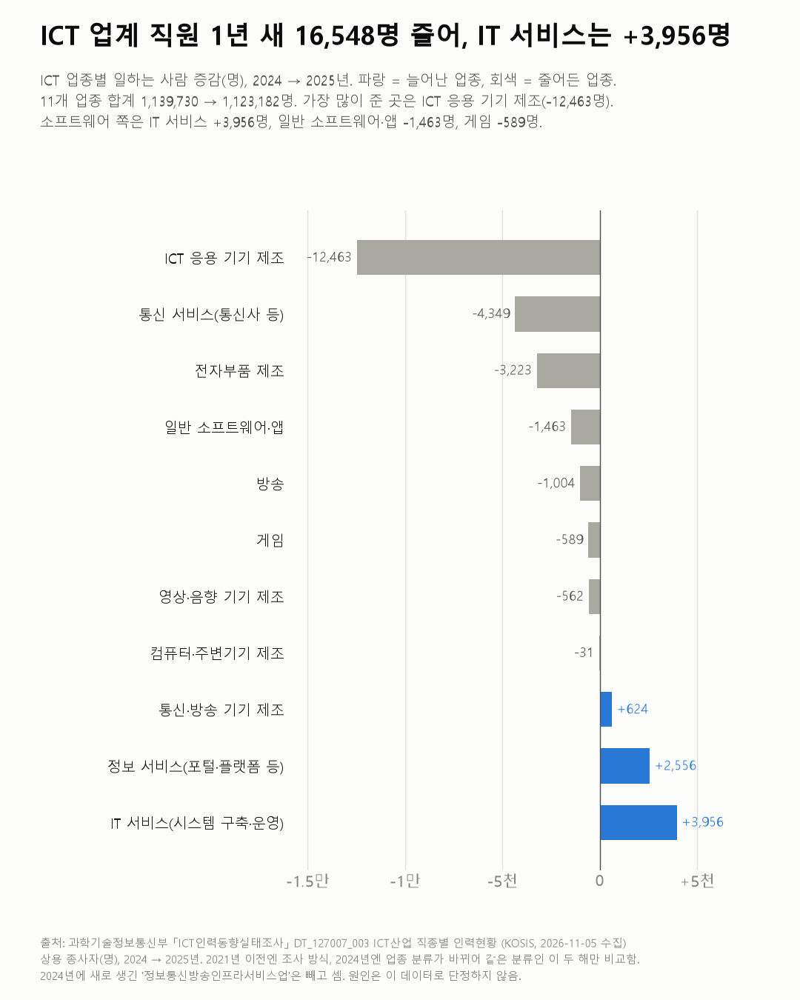

소프트웨어 회사 다니면 다 개발자일까요?
소프트웨어 회사 직원 가운데 개발·연구 기술직은 절반이 안 돼요. 업계 일자리는 작년보다 조금 줄었어요.

- 2025년 소프트웨어 회사에서 일하는 사람은 42만 5,760명이고, 그중 개발·연구 기술직은 16만 7,363명(39.3%)이에요.
- 사무·관리직이 25만 4,593명(59.8%)으로 더 많아요. 게임 회사만 기술직이 더 많아요(4만 7,789명 중 2만 6,430명).
- ICT 업계 전체로는 1년 새 1만 6,548명 줄었어요. 늘어난 곳은 IT 서비스(+3,956명)와 포털 같은 정보 서비스(+2,556명) 정도예요.
소프트웨어 회사에 다닌다고 하면 다 코드를 짜는 사람일까요? 회사 업종과 직종을 함께 나눈 표가 있어서 그걸로 나눠 봤어요.
2025년 소프트웨어 회사 직원은 42만 5,760명이에요. IT 서비스(시스템 구축·운영) 20만 8,008명, 일반 소프트웨어·앱 16만 9,964명, 게임 4만 7,789명이에요.
그중 개발·연구 기술직은 16만 7,363명(39.3%)이에요. 사무·관리직이 25만 4,593명(59.8%)으로 더 많아요. 기술직엔 연구원·엔지니어도 섞여 있어서 개발자만 센 숫자도 아니에요. 일반 소프트웨어·앱 회사는 기술직 5만 6,299명, 사무·관리직 11만 130명이에요. 게임 회사만 반대였어요. 기술직 2만 6,430명, 사무·관리직 2만 1,359명이에요.
소프트웨어 회사 전체는 1년 새 42만 3,857명에서 42만 5,760명으로 거의 그대로예요. IT 서비스는 +3,956명, 일반 소프트웨어·앱은 -1,463명, 게임은 -589명이었어요.

ICT 업계 11개 업종을 합치면 달라져요. 113만 9,730명에서 112만 3,182명으로 1만 6,548명 줄었어요. 가장 많이 준 곳은 ICT 응용 기기 제조(-1만 2,463명), 통신 서비스(-4,349명), 전자부품 제조(-3,223명)예요.
딱 한 해를 비교한 숫자예요. 이게 흐름인지 한 해의 출렁임인지는 몇 해가 더 쌓여야 보일 것 같았어요.
이 숫자는 어디서 왔나요
출처
| 데이터 | 출처 | 쓰임 |
|---|---|---|
| ICT산업 직종별 인력현황 (KOSIS DT_127007_003) | 과학기술정보통신부 「ICT인력동향실태조사」 | 업종·직종별 상용 종사자 수(명), 2024·2025년 |
- 회사 업종 기준이다. '소프트웨어 회사' = 표의 '소프트웨어 개발 및 제작업'(일반 소프트웨어·앱, 게임, IT 서비스 3개 업종). 게임 회사의 사무직도 게임으로 센다.
- '개발·연구 기술직' = 표의 연구기술직. 개발자뿐 아니라 연구원·엔지니어가 섞여 있어 개발자 수 자체는 아니다. 사무·관리직엔 기획·영업·디자인 등이 섞여 있다.
- 2024 → 2025년만 비교했다. 2021년 이전과 2022년 이후는 조사 방식(조사기반 → 등록기반)이, 2024년엔 업종 분류가 바뀌었다(이때 '정보통신방송인프라서비스업'이 새로 생김). 업종별 증감은 이 새 업종을 뺀 11개 업종으로 셌다.
- 직종별 값은 잠정치다(확정치는 따로 공표하지 않음). 비율은 표의 인원으로 계산했다.
- 교차 확인: 이 표의 값을 다룬 보도는 찾지 못했다. 다른 조사인 소프트웨어정책연구소 「SW산업 실태조사」도 2025년 소프트웨어 인력이 1년 새 0.2% 늘어 거의 그대로였다고 발표했다(기준이 달라 숫자는 다르다).
- 수집일: 2026-11-05 (KOSIS 오픈API).
기준일
2024·2025년.
한계 4가지
이 데이터로 말할 수 없는 것
- 1년 비교라 흐름이라고 하기엔 짧다. 조사 방식·분류가 바뀌어 더 긴 비교는 하지 않았다.
- 회사 기준이라 다른 업종 회사(은행·제조사 등)에서 일하는 개발자는 빠져 있다. 개발자 구인은 개발자 구인 글, 개발자 임금은 개발자 임금 글, 20대 정보통신업 일자리는 산업별 청년 일자리 글에서 다뤘다.
- 원인(AI·경기 등)은 이 데이터로 단정하지 않는다.
- 네 조사를 묶어 '개발자 일자리가 정말 줄었나'를 본 글은 개발자 일자리 종합 글이다.
전제 기록
데이터를 보기 전에 적어둔 것, 그리고 보고 나서 바꾼 것
- 전제 기록(premises)(데이터를 받기 전에 작성)를 따랐다. 받은 뒤 2024년에 업종 분류가 바뀐 것을 확인해 비교를 2024 → 2025로 좁혔다.
질문
소프트웨어·게임·IT서비스 같은 ICT 회사에서 일하는 사람이 몇 명이고 1년 새 늘었는지, 그중 개발·연구 같은 기술직은 얼마나 되는지 열어 봤어요.
새 글 나오면 받아 보기
지금은 RSS로 받을 수 있어요. 메일은 아직 준비 중이에요.